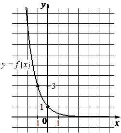

Авторский разбор и аудит предварительны; внешней экспертизы нет.
Модель автора: claude-opus-5-5 (opus; effort=low); в основных частотах: True ·
Впишите правильный ответ.
На рисунке изображён график функции вида Найдите
значение

КЭС: 2.1 Целые и дробно-рациональные уравнения; 3.1 Функция, способы задания функции. График функции. Взаимно обратные функции. Чётные и нечётные функции. Периодические функции; 3.5 Показательная и логарифмическая функции, их свойства и графики
27
| ID / вход | Действие | Результат | Локальные KC |
|---|---|---|---|
| s1 · condition | Считать с графика координаты отмеченной точки, отличной от (0;1): f(-1)=3 | f(-1)=3 | kc1 |
| s2 · condition, s1 | Подставить точку в f(x)=a^x и найти основание: a^{-1}=3 | a=1/3 | kc2 |
| s3 · s2 | Вычислить f(-3)=(1/3)^{-3} | 27 | kc3 |
[
{
"id": "m1",
"name": "Восстановление формулы по точке графика и вычисление значения",
"step_ids": [
"s1",
"s2",
"s3"
]
}
]По изображению графика с сеткой определить координаты явно отмеченной точки с целыми координатами; применимо, когда точка однозначно читается по сетке.
{
"local_kc_id": "kc1",
"status": "match",
"catalog_kc_id": "graph_coordinates",
"evidence": [
{
"ref": "step:s1:action",
"quote": "Считать с графика координаты отмеченной точки, отличной от (0;1): f(-1)=3"
},
{
"ref": "image:assets/fe8d4cef2bac3e1aa6fe7ae2.png",
"region_description": "Левее оси y на графике отмечена жирная точка на пересечении линий сетки x=-1 и y=3 (подписи -1 на оси x и 3 на оси y); вторая отмеченная точка (0;1)."
}
],
"context_refs": [
"condition"
],
"alternatives_checked": [
{
"catalog_kc_id": "literal_9aee0783618d",
"reason": "касается знака производной, а не координат точки"
}
],
"rationale": "Чтение координат явно отмеченной точки по сетке с подписанными делениями; восстановление формулы выполнено отдельно в s2, что соответствует границе определения.",
"proposal": null,
"blocking": false,
"issue_ids": []
}Подставить координаты известной точки графика в формулу f(x)=a^x и решить полученное уравнение относительно основания a (a>0, a≠1).
{
"local_kc_id": "kc2",
"status": "match",
"catalog_kc_id": "literal_3ac0ecd3cd49",
"evidence": [
{
"ref": "step:s2:action",
"quote": "Подставить точку в f(x)=a^x и найти основание: a^{-1}=3"
},
{
"ref": "step:s2:result",
"quote": "a=1/3"
}
],
"context_refs": [
"condition",
"step:s1:result"
],
"alternatives_checked": [
{
"catalog_kc_id": "exponential_equation",
"reason": "неизвестно основание, а не показатель; приравнивание показателей не выполняется"
},
{
"catalog_kc_id": "direct_proportion",
"reason": "другой класс функции y=kx"
}
],
"rationale": "Для y=a^x по точке (-1;3) с ненулевой абсциссой найдено основание a=1/3; полностью соответствует определению.",
"proposal": null,
"blocking": false,
"issue_ids": []
}Вычислить значение a^n для рационального основания и целого отрицательного показателя, используя a^{-n}=(1/a)^n.
{
"local_kc_id": "kc3",
"status": "match",
"catalog_kc_id": "literal_6308771d01a6",
"evidence": [
{
"ref": "step:s3:action",
"quote": "Вычислить f(-3)=(1/3)^{-3}"
},
{
"ref": "step:s3:result",
"quote": "27"
}
],
"context_refs": [
"step:s2:result"
],
"alternatives_checked": [
{
"catalog_kc_id": "power_laws",
"reason": "описывает преобразования степеней (степень степени, произведения, частного), а не вычисление значения при подстановке аргумента"
}
],
"rationale": "Наблюдаемое действие — подстановка x=-3 в установленную формулу (1/3)^x и вычисление значения 27; вычисление степени с отрицательным показателем — арифметическая часть этого действия, не дробится в отдельный KC.",
"proposal": null,
"blocking": false,
"issue_ids": []
}[]
[]
{
"author_path": "data/annotation/runs/2026-11-07-fipi-team-bogdan108-051-150/raw/author/91C2AD.json",
"auditor_path": "data/annotation/runs/2026-11-07-fipi-team-bogdan108-051-150/raw/auditor/91C2AD.json",
"accepted_after_review": null
}